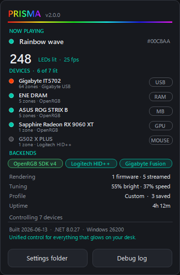
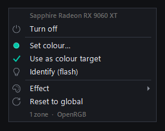
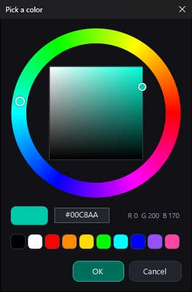

Everything at a glance
Click the rainbow title for what's playing, how many LEDs are lit, which devices and backends are in use, and how each one is driven.
One app for every light in your PC. Motherboard, RAM, GPU, fan strips, keyboard and mouse, driven from a single frame loop so they all move in step. No vendor suites, no cloud, no account.

Click the rainbow title for what's playing, how many LEDs are lit, which devices and backends are in use, and how each one is driven.

Right-click any device for its own colour or effect. Identify blinks it so you know which one it is; Reset brings it back to the global look.

A colour wheel with a hex field and quick swatches. Colours you use are kept as swatches in the main window.
The pictures come from Prisma's built-in preview windows, filled with sample devices.
Every device is drawn on one shared loop, 25 frames a second by default (5 to 30 in Settings), so a rainbow on the RAM lines up with the one on the fans. Devices whose firmware can run an effect on their own do so instead of being streamed, which keeps the fragile ones stable.
Four ways in, used side by side, so the lights keep working when one of them fails.
| Way in | Devices | Needs |
|---|---|---|
| OpenRGB SDK | Motherboard, RAM and anything else OpenRGB finds | An OpenRGB server, running as administrator |
| Sapphire Nitro Glow V3 | Sapphire Radeon cards with Nitro Glow V3 lighting, through AMD's own driver | Nothing: no OpenRGB, no admin |
| Logitech HID++ 2.0 | Logitech G gear on a Lightspeed receiver | Nothing: no G HUB |
| Gigabyte IT8297 / IT5702 | Gigabyte RGB Fusion fan and ARGB strip controllers | Nothing: direct USB |
What Prisma can light depends on your hardware: the list above is what it supports today. Devices are opt-in one by one, so you can leave a mouse to its own software.
OpenRGB Server that starts at logon with Run with highest privileges. Prisma starts it for you when it's there.Run only one OpenRGB. Two servers setting up the same memory bus can freeze a device until the PC is fully powered off. Prisma's conflict check is there to catch it. Windows SmartScreen may warn the first time because the app isn't signed: More info › Run anyway.
Start Prisma.exe with any of these while it's already running and the command goes to the open app. Settings › Commands can make ready-made shortcuts for you.
--toggle lights on / off
--off everything off
--effect rainbow static, rainbow, cycle, breathing, strobe, gradient,
comet, twinkle, fire, ambient, music, surprise, off
--color 00c8aa 6-digit hex
--brightness 60 1–100, or +10 / -10
--speed 50 1–100, or +10 / -10
--profile Gaming a saved profile, by name
--next-profile
--show bring the window up
--minimized start hidden in the tray